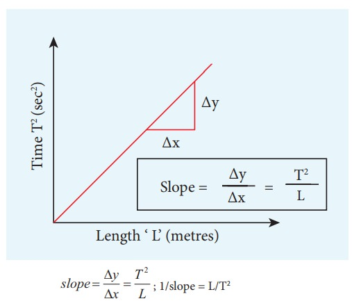

About Us
Welcome to our website! We are passionate about measuring the acceleration due to gravity with simple pendulums.
Introduction
If the reduced pendulum length lr and the oscillation period T are known, this can be used for calculating the acceleration due to gravity g = lr·4π2/T2.
The Experiment
Experiment description For a physical pendulum with small deflections, the oscillation period is given by T = 2π·sqrt(lr/g) with the reduced pendulum length lr = J/ms. If the reduced pendulum length lr and the oscillation period T are known, this can be used for calculating the acceleration due to gravity g = lr·4π2/T2. Often the reduced pendulum length cannot be determined with the desired precision if the precise determination of the moment of inertia or of the center of gravity are difficult. With the reversible pendulum, the mass distribution is modified in such a way that the oscillation period is identical for both rotational axes. From this it can be concluded that the reduced pendulum length lr corresponds to the distance between the two axes and therefore is known to a high degree of precision. According to Steiner's theorem, J = JS + ms2 with JS being the moment of inertia of the pendulum with respect to the axis through the center of gravity and s being the distance between the center of gravity and rotational axes. The reduced pendulum length is therefore lr = J/ms = JS/ms + s. The second rotational axis is now located on the other side of the center of gravity and, with the same oscillation period and the same reduced pendulum length, is at a distance x from the center of gravity. In this case lr = JS/mx + If the equation is rearranged to give the value for x, x = lr – s. The distance between the two rotational axes s+x therefore precisely corresponds to the reduced pendulum length lr. Because the oscillation period T can be determined precisely, the reversible pendulum is very suitable for the determination of the value of the earth's acceleration g.
Apparatus Required
etort stand,pendulam,bob,thread,meter scale,stop watch.
Diagram
